|
v1.3.13
|
Loading...
Searching...
No Matches
|
v1.3.13
|
| Dependencies | None |
|---|---|
| CMakeLists.txt | set( PLUGINS "stomatalconductance" ) |
| Header File | #include "StomatalConductanceModel.h" |
| Class | StomatalConductanceModel |
| Constructors |
|---|
| StomatalConductanceModel( helios::Context* ) |
| Primitive Data Label | Symbol | Units | Data Type | Description | Applicable model(s) | Available Plug-ins | Default Value |
|---|---|---|---|---|---|---|---|
| radiation_flux_PAR | 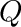 | W/m2 | float | PAR photon flux density. Note W/m2 is automatically converted to mol/m2/s using a factor of 4.57. | BMF | Can be computed by RadiationModel plug-in. | 0 |
| temperature |  | Kelvin | float | Primitive surface temperature. | All | Can be computed by EnergyBalanceModel plug-in. | 300 K |
| air_pressure |  | Pascals | float | Atmospheric pressure. | All | N/A | 101,000 Pa |
| air_temperature | 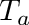 | Kelvin | float | Temperature of air outside of primitive boundary-layer. | All | N/A | 300 K |
| air_humidity |  | Unitless | float | Relative humidity of air outside of primitive boundary-layer. | All | N/A | 0.5 |
| boundarylayer_conductance** |  | mol air/m2-s | float | Boundary-layer conductance to heat. (Assumed that b.l. conductance to moisture is 1.08 that of heat.) | All | Can be computed by BLConductanceModel plug-in, or by EnergyBalanceModel plug-in if optional output primitive data "boundarylayer_conductance_out" is enabled. | 0.1 mol/m2-s |
| beta_soil | 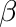 | unitless | float | Soil moisture factor, defined as  , with being the effective soil water content, water content at field capacity, and water content at the wilting point. , with being the effective soil water content, water content at field capacity, and water content at the wilting point. | All | N/A | 1.0 |
| net_photosynthesis |  | mol/m2-s | float | Net CO2 (photosynthetic) flux. | BWB, BBL, Mopt | Can be computed by PhotosynthesisModel plug-in. | 0 |
| air_CO2 |  | mol/mol | float | CO2 concentration of air outside primitive boundary-layer. | BWB, BBL, Mopt | N/A | 400 mol/mol |
| Gamma_CO2 | 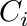 | mol/mol | float | CO2 compensation point of photosynthesis including dark respiration. (Note: only used for Ball-Berry models.) | BBL | Can be computed by PhotosynthesisModel plug-in (need to enable optional primitive data output). | 100 mol/mol |
**The stomatal conductance model will also check for primitive data "boundarylayer_conductance_out" if "boundarylayer_conductance" does not exist. If you are using the energy balance model to calculate the boundary-layer conductance, you should enable optional output primitive data "boundarylayer_conductance_out" so that other plug-ins can use it.
| Primitive Data Label | Symbol | Units | Data Type | Description |
|---|---|---|---|---|
| moisture_conductance |  | mol air/m2-sec | float | Conductance of water vapor through stomata. |
This plugin implements several different stomatal conductance models. A brief description of the theory behind each model is given below, along with coefficients obtained from several example species.
The default model is the Buckley, Mott, Farquhar model (see Buckley, Mott, Farquhar (2003) Model (simplified version given in Buckley, Turnbull, and Adams 2012)).
The Ball, Woodrow, and Berry (1987) model is based on the empirical observation that stomatal conductance various roughly linearly with the net photosynthetic flux and relative humidity at the leaf surface  . They proposed the relationship:
. They proposed the relationship:
![\[g_s = g_{s,0}+a_1A\beta\frac{h_s}{C_s},\]](form_182.png)
where 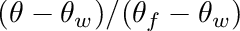 is the air CO2 concentration at the leaf surface, and  and are empirical parameters. is a factor to account for reduction in stomatal conductance with soil drying and is defined as
and are empirical parameters. is a factor to account for reduction in stomatal conductance with soil drying and is defined as
![\[\beta = \frac{\theta-\theta_w}{\theta_f-\theta_w},\]](form_186.png)
where are the effective soil water content, water content at field capacity, and water content at the wilting point. By default, it is assumed that  .
.
This model is at odds with several more recent observation of stomatal function, including: 1) stomata have been shown to respond to the intercellular CO2 concentration 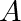 and not the concentration outside of the leaf (Mott 1988); 2) stomata respond to the rate of evaporation, not humidity itself (Mott and Parkhurst 1991); 3) the predicted value could become negative; 4) the predicted value of approaches infinity as  ; 5) the predicted value of does not respond to soil drying. Another more practical limitation is that photosynthesis must also be modeled in order to calculate stomatal conductance. Nonetheless, this model is one of the most commonly used models of stomatal conductance.
; 5) the predicted value of does not respond to soil drying. Another more practical limitation is that photosynthesis must also be modeled in order to calculate stomatal conductance. Nonetheless, this model is one of the most commonly used models of stomatal conductance.
The CO2 concentration at the leaf surface is calculated as
where 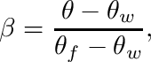 is the boundary-layer conductance to CO2 (assuming the diffusivity of CO2 in air is 0.75 that of water vapor), and is the air CO2 concentration outside of the leaf boundary-layer.
The relative humidity at the leaf surface is calculated by setting up a water vapor flux balance at the leaf surface and iteratively solving for the humidity at the leaf surface:
where 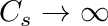 and 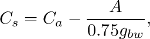 are the saturated vapor pressure evaluated respectively at the leaf surface and air temperature (calculated according to the Tetens equation), and is the air relative humidity outside the leaf boundary-layer.
Below are example parameter values for several different tree crop species (a description of how calibration data was collected is given in the section below). Note that, as mentioned above, in order to apply the model photosynthesis must also be modeled - coefficients for these species are also given in the photosynthesis model documentation.
| Species | (mol air/m2-s) | (unitless) | 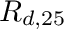 of fit |
|---|---|---|---|
| Almond (default) | 0.0733 | 9.422 | 0.976 |
| Apple | 0.0444 | 7.681 | 0.809 |
| Cherry | 0.0939 | 5.226 | 0.839 |
| Prune | 0.0425 | 7.120 | 0.917 |
| Pear | 0.0775 | 8.298 | 0.928 |
| Pistachio (female) | 0.0647 | 10.732 | 0.956 |
| Pistachio (male) | 0.0419 | 7.580 | 0.953 |
| Walnut | 0.1253 | 5.527 | 0.962 |
Leuning et al. (1990,1995) revised the original Ball, Woodrow, Berry model to overcome some of it's original limitations, namely the fact that approaches infinity as by calculating stomatal conductance as
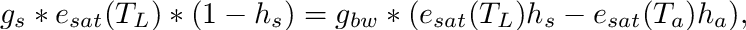
where 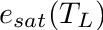 is the vapor pressure deficit between the sub-stomatal cavity and the leaf surface, is the CO2 compensation point of photosynthesis (including dark respiration), and 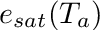 (mmol/mol) is an additional empirical parameter.
is calculated by first determining the surface relative humidity as described above for the Ball, Woodrow, Berry model, then calculating the surface vapor pressure deficit as 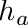 ( is atmospheric pressure).
Below are example parameter values for several different tree crop species (a description of how calibration data was collected is given in the section below). Note that, as mentioned above, in order to apply the model photosynthesis must also be modeled - coefficients for these species are also given in the photosynthesis model documentation.
| Species | (mol air/m2-s) | (unitless) | (mmol/mol) | of fit |
|---|---|---|---|---|
| Almond (default) | 0.0743 | 4.265 | 14570.0 | 0.984 |
| Apple | 0.0405 | 3.511 | 32950.2 | 0.869 |
| Cherry | 0.0881 | 2.485 | 1578689.7 | 0.947 |
| Prune | 0.0425 | 3.185 | 30488.1 | 0.846 |
| Pear | 0.0814 | 3.718 | 61725.6 | 0.894 |
| Pistachio (female) | 0.0675 | 4.743 | 1566202.4 | 0.971 |
| Pistachio (male) | 0.0465 | 3.370 | 26990.8 | 0.934 |
| Walnut | 0.1248 | 4.548 | 21.4 | 0.977 |
The stomatal conductance mode of Medlyn et al. (2011) combines the empirical modeling approach with the hypothesis that stomata should act should act to optimally minimize the amount of water used per unit carbon gained.
where is in units of mol/mol, and  is atmospheric pressure in kPa. Note that there are a couple of deviations of this equation from that presented in Medlyn et al. (2011): 1) The factor of 1.6 is needed for the resulting conductance to be that of water vapor, 2) We express in units of mol/mol, and thus multiplication by the atmospheric pressure is needed to get units of kPa, 3) We use surface values for VPD and CO2 concentration, which allows for incorporation of boundary-layer effects.
is atmospheric pressure in kPa. Note that there are a couple of deviations of this equation from that presented in Medlyn et al. (2011): 1) The factor of 1.6 is needed for the resulting conductance to be that of water vapor, 2) We express in units of mol/mol, and thus multiplication by the atmospheric pressure is needed to get units of kPa, 3) We use surface values for VPD and CO2 concentration, which allows for incorporation of boundary-layer effects.
One issue with this model is that stomatal conductance blows up to infinity as . Our implementation imposes an arbitrary minimum value of 0.00001 mol/mol.
Below are example parameter values for several different tree crop species (a description of how calibration data was collected is given in the section below). Note that, as mentioned above, in order to apply the model photosynthesis must also be modeled - coefficients for these species are also given in the photosynthesis model documentation.
| Species | (mol air/m2-s) | ( 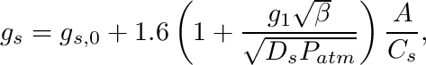) | of fit |
|---|---|---|---|
| Almond (default) | 0.0825 | 2.637 | 0.941 |
| Apple | 0.0426 | 2.160 | 0.864 |
| Cherry | 0.0936 | 1.043 | 0.893 |
| Prune | 0.0412 | 1.863 | 0.949 |
| Pear | 0.0775 | 2.418 | 0.966 |
| Pistachio (female) | 0.0756 | 3.252 | 0.902 |
| Pistachio (male) | 0.0434 | 2.039 | 0.941 |
| Walnut | 0.1246 | 1.167 | 0.973 |
The stomatal conductance model of Buckley, Turnbull, and Adams (2012) is a simplification of the hydromechanical/biochemical model orignially proposed by Buckley, Mott, and Farquhar (2003). The original model is highly complex with many parameters, but with the simplifications described by Buckley, Turnbull, and Adams (2003), an explicit expression for stomatal conductance can be written as
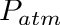
where is the photosynthetic photon flux density, is defined and calculated as described for other models above, 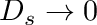 and 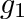 are semi-empirical parameters. Note that the photosynthetic flux that is input to the plug-in is in units of energy flux (W/m2), but in this equation is photon flux density ( mol/m2-s). This is because the primitive data value output from the radiation model is in energy flux. The stomatal conductance plug-in automatically converts energy flux to photon flux density using a factor of 4.57 mol/W.
Below are example parameter values for several different tree crop species (a description of how calibration data was collected is given in the section below).
| Species | 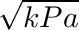 (mmol/m2-s) | 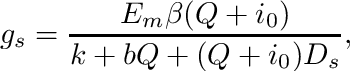 ( mol/m2-s) | 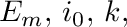 ( mol/m-2s-1 mmol mol-1) | (mmol/mol) | of fit |
|---|---|---|---|---|---|
| Almond (default) | 865.52 | 38.65 | 780320.1 | 2086.07 | 0.991 |
| Apple | 24.82 | 182.86 | 109688.7 | 21.30 | 0.986 |
| Cherry | 138.03 | 154.24 | 262462.7 | 545.59 | 0.963 |
| Prune | 5.47 | 115.73 | 12280.2 | 6.10 | 0.993 |
| Pear | 13.06 | 167.89 | 25926.4 | 9.81 | 0.960 |
| Pistachio (female) | 24865.61 | 171.52 | 63444078.5 | 22428.01 | 0.968 |
| Pistachio (male) | 236.89 | 272.74 | 1224393.7 | 257.26 | 0.964 |
| Walnut | 29.12 | 68.03 | 19778.8 | 75.26 | 0.972 |
Each model has a data structure containing member variables for each of the model parameters. These are listed in the table below.
| Model | Parameter Structure |
|---|---|
| Ball, Woodrow, Berry | BWBcoefficients |
| Ball, Berry, Leuning | BBLcoefficients |
| Medlyn et al. Optimality | MOPTcoefficients |
| Buckley, Mott, Farquhar | BMFcoefficients |
In order to modify model coefficients from the default values, one should 1) declare and instance of the coefficient structure, 2) modify the appropriate data elements of the data structure, and 3) pass the data structure to the StomatalConductanceModel::setModelCoefficients() function. Model coefficients can be set to the same value for all primitives, or differently for a subset of primitives based on a vector of UUIDs. Example code is given below
BMFcoefficients modelcoeffs;
modelcoeffs.Em = 9.3;
modelcoeffs.i0 = 5.3;
modelcoeffs.k = 672;
modelcoeffs.b = 6.7;There are two possible functions to run the model: one to run the model for all primitives in the Context (see StomatalConductanceModel::run()), and another to run the model only for a subset of primitives given their UUIDs (see StomatalConductanceModel::run( std::vector<uint> &UUIDs )).
#include "StomatalConductanceModel.h"
using namespace helios;
int main(){
Any of the above steady-state models can be run in dynamic mode by specifying a timestep and response time constants, which will delay stomatal response to environmental stimuli. When environmental conditions are changed, the stomatal conductance will exponentially relax toward the steady-state value, which is calculated according to any of the above models.
Let the steady-state stomatal conductance value calculated according to any of the above models be denoted by . Then the dynamic stomatal conductance is calculated according to the following equation
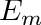
where
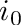 is the time constant for stomatal response to a change in environmental conditions, and 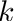 if stomata are opening, and 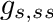 if stomata are closing.
The above equation can be discretized using a forward Euler scheme to update the stomatal conductance after each timestep 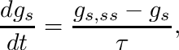 as
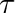
The response time constants 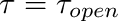 and 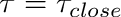 are specified using the StomatalConductanceModel::setDynamicTimeConstants() method. If time constants are not defined, a warning will be issued and the model will run in steady-state mode.
The model also requires an initial stomatal conductance value, which is specified by setting primitive data "moisture_conductance". If this primitive data is not defined, the model will run in steady-state mode for the first timestep, and this steady-state value will become the initial value for running in dynamic mode.
Below is and example of running the model in dynamic mode.
#include "StomatalConductanceModel.h"
using namespace helios;
int main(){